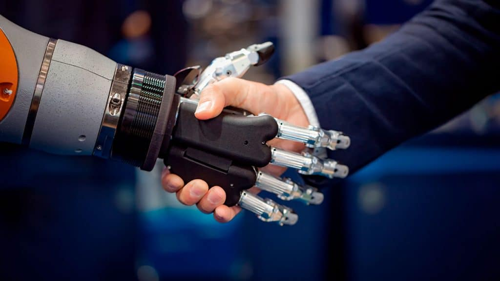
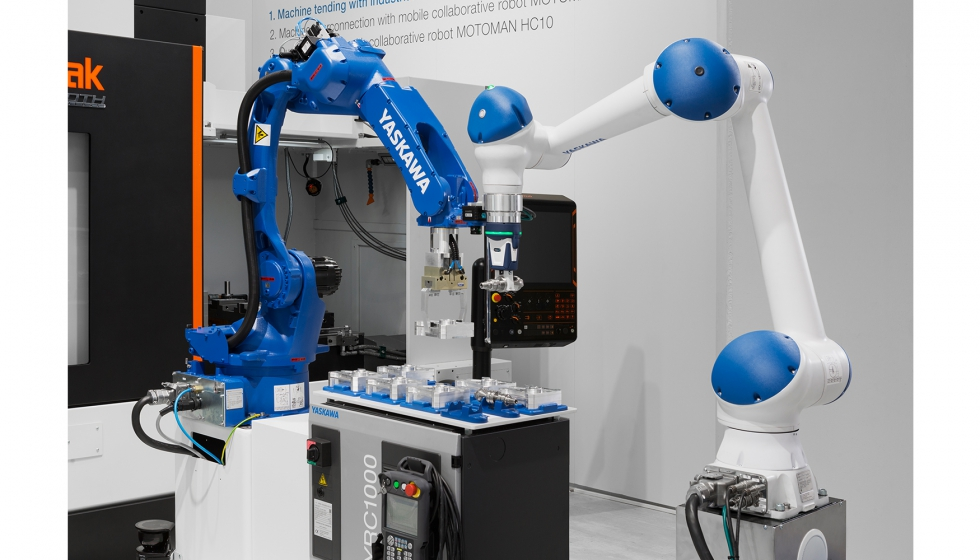

Aplicaciones de la Robotica

Los robots son utilizados en una diversidad de aplicaciones, desde robots tortugas utilizados en algunos salones de clases,
robots soldares en la industria automotriz, hasta brazos teleoperados en el transbordador especial.
Las aplicaciones de la robótica son un modo de responder ante la exigencia de más demanda de productos
y la necesidad de mejorar tecnológicamente los recursos disponibles.

- Transporte de materiales.
- Montaje.
- Corte mecánico, rectificado, desbardado y pulido.
- Manipulación de plásticos y otros materiales.
- Reciclaje.
- Medición, inspección, control de calidad.
- Exploración espacial.
- Mejorar procesos quirúrgicos.
- Almacenaje y distribución de medicamentos.